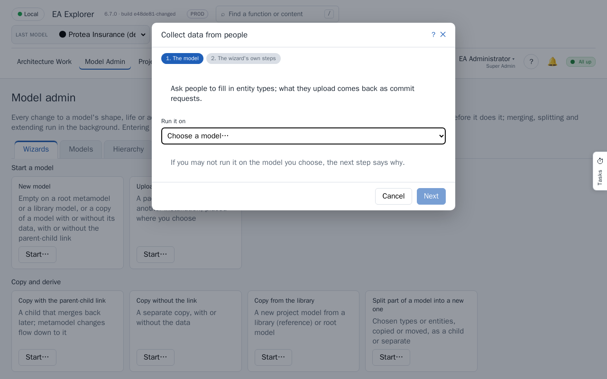

Collect data from people
For: Model Admin
Ask people to fill in entity types; what they send back comes as commit requests.

#/model-admin/wizards?wizard=collectWhy do this
Often the people who know an application or a process are not architects. Collecting data sends them a sheet or form with just the fields that matter, by a date; what comes back waits as requests for you to review, so their knowledge reaches the model without giving them the model to edit. See Data quality: why it matters and how it is measured.
Every route in ends the same way: what arrives is shown as new, changed, kept and problem rows, and a person decides. That review is what lets you automate feeds without losing control of the model.
In TOGAF terms: Supports the content of phases B, C and D (baseline architectures), keeping the Architecture Landscape current from the systems that already know it. See EA Explorer and the TOGAF Standard.
The goal: The people who know fill in the model, and you review what they send.
Before you start You need the Model Admin role on the model.
Steps
- Open Model Admin › Wizards on the model and choose Collect data from people.
- Choose the types and fields, who fills them and by when.
- Send. What comes back waits for you to review.